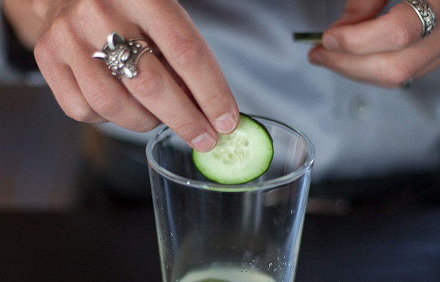
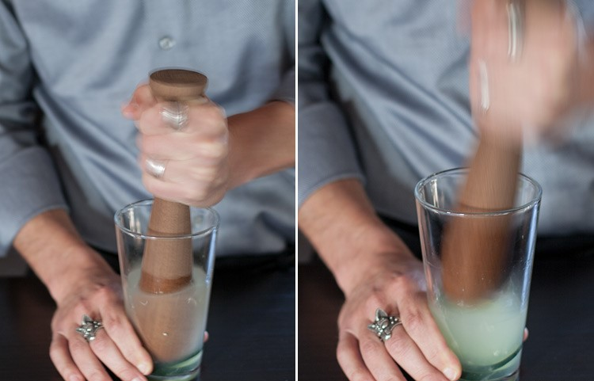

GIN DE PEPINO
Ah, primavera, é realmente uma época fantástica. Quando as flores finalmente começam a florescer, as árvores ficam verdes novamente e os insetos começam a te irritar em todos os lugares e a serem esmagados no seu carro, você sabe que realmente é hora de comemorar. Sim, comemorar, eu quero dizer exatamente o que sempre quero dizer: é hora de um coquetel refrescante, refrescante e crocante. As celebrações de hoje são trazidas para você pelo Cucumber Gin Spritzer.
Aposto que você pode adivinhar o que vai encontrar aqui: pepino, gin e um pouco de spritz (uma leve efervescência faz as coisas parecerem ainda mais refrescantes).
Para o gin, não conseguimos pensar em nada melhor do que o Azzurre Gin - é limpo e refrescante. Você encontrará tudo o que precisa em um bom gole aqui, notas florais, um pouco de citrus, textura suave. Não vou mentir, enquanto eu estava descobrindo as proporções certas para o Cucumber Gin Spritzer, tive que beber bastante gin. Foi um trabalho difícil, mas eu estava à altura do desafio.
 Além disso, adicionamos suco de limão e pepinos. Fomos inspirados pela água de pepino. OK, bem, a água de pepino que eles estão sempre bebendo em "Better Call Saul". Pensamos que se alguém pudesse usar um pouco de pontinha de álcool, seria o Saul.
Agora, se você está pronto para relaxar e aproveitar a primavera, é melhor se preparar para desfrutar também do seu refresco de pepino! Vamos ao Cucumber Gin Spritzer para que possamos sentir os efeitos refrescantes completos o mais rápido possível.
Ingredientes
- - 90 ml de gin.
- - 30 ml de suco de limão.
- - Água com gás.
- - Fatia de limão.
- - Fatia de pepino.
- - Gelo
- - Copo: Old Fashioned
Como fazer
- - Adicione o gin, o suco de limão e o pepino ao copo de mistura.
- - Amasse os ingredientes.
- - Adicione gelo.
- - Complete com água com gás.
- - Enfeite com uma fatia de limão e uma fatia de pepino.